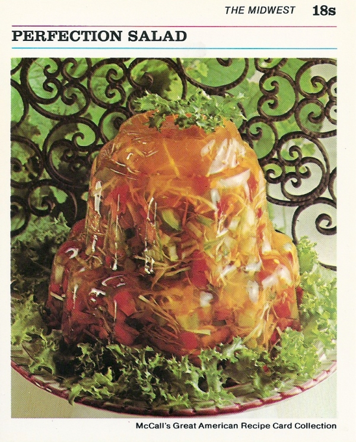

Perfection Salad
Go HOME

Description:
I cannot describe to you what this tastes like, because I refuse to eat it.
I mean, have you looked at this thing? It's salad, inside gelatin.
Have you ever seen healthy food suspended in sugar?
Ingredients:
- 2 envelopes -- unflavoured gelatin
- 1/2 cup -- sugar
- 1 tsp -- salt
- 1 can -- apple juice
- 1/2 cup -- lemon juice
- 2 tbsp -- vinegar
- 1 cup -- shredded carrot
- 1 cup -- sliced celery
- 1 cup -- finely shredded cabbage
- 1/2 cup chopped green pepper
- 1 can (4 oz) -- chopped pimento
Steps:
- In a small saucepan or pot, combine gelatin, sugar, and salt. Mix well.
- Add a cup of water. Stir over low heat until sugar and gelatin are dissolved.
- Remove from heat. Stir in apple juice, lemon juice, vinegar, and 1/4 cup cold water.
- Pour into medium bowl. Refridgerate for 1 hour, until the mixture is the consistency of beaten egg white, or toddler snot.
- Add carrot, celery, cabbage, green pepper, and pimento. Stir well until combined.
- Turn mixture over into a decorative, 11/2-quart mold. Refridgerate 4 hours, or until firm.
- Unmold by running a small spatula around the edges to release; invert onto a serving plate. Place hot dishcloth over mold; shake gently to release. Repeat, if necessary. Lift off mold. refrigerate until ready to serve.
Makes 8 horrific servings, as if you know at least 7 actual humans who would help you eat this.
Source: Vintage Recipe Cards